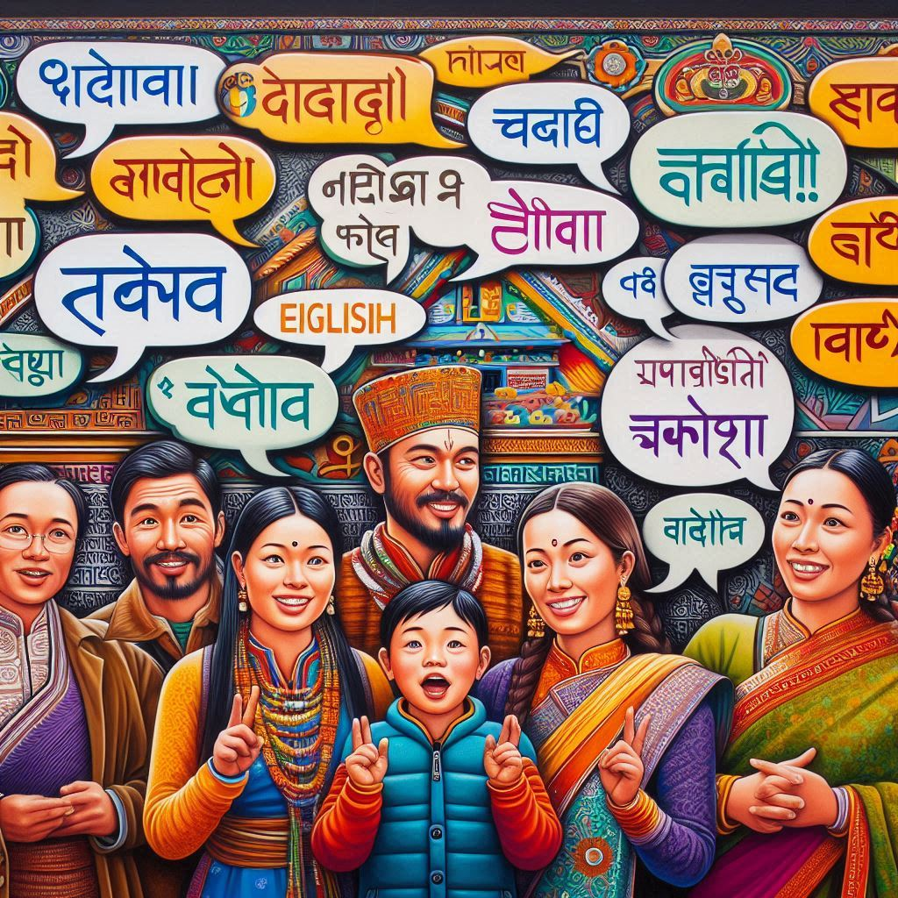

Linguistic Diversity in Sikkim
Sikkim is a linguistically diverse state with several languages spoken across its different ethnic communities. Here’s an overview of the main languages:
1. Nepali
- Status: The most widely spoken language in Sikkim, serving as the lingua franca among the Nepali-speaking population.
- Usage: It is used in daily communication, education, and media.
2. Bhutia
- Status: Spoken by the Bhutia community, this language has Tibetan roots and is part of the Sino-Tibetan language family.
- Usage: Primarily used in cultural and religious contexts, along with some daily conversations.
3. Lepcha
- Status: The language of the Lepcha community, which is one of the indigenous groups in Sikkim.
- Usage: Used in traditional songs, folklore, and cultural practices, but it has fewer speakers compared to Nepali and Bhutia.
4. Hindi
- Status: Widely spoken and understood, especially in urban areas and among younger generations.
- Usage: Used in government, media, and as a second language by many people.

5. English
- Status: An official language of Sikkim, often used in education, administration, and tourism.
- Usage: Increasingly common among the younger population and in formal contexts.
6. Other Languages
- Tibetan: Spoken by some communities, particularly in monasteries and cultural contexts.
- Other dialects: Various dialects and languages may be spoken by smaller communities, reflecting Sikkim’s cultural diversity.
Language in Education
Sikkim's educational system promotes multilingualism, with Nepali often being the medium of instruction, alongside English and Hindi.
Conclusion
Overall, the linguistic landscape of Sikkim reflects its rich cultural heritage and the coexistence of multiple communities.